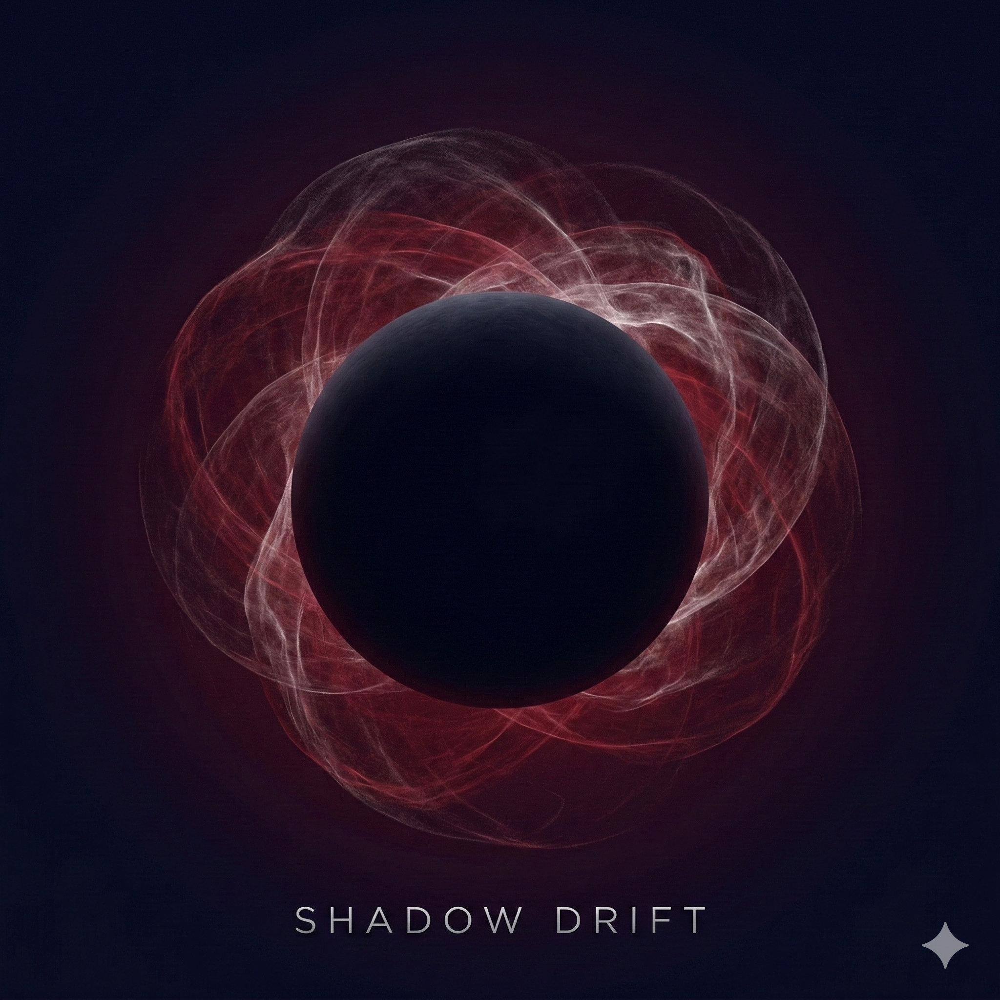

Music has been my primary language since I was three years old. A multi-instrumentalist with roots in classical and jazz saxophone, I explore the textures of piano, drums, trombone, and deeper saxophone voices. My grandfather scored silent films — a legacy that shaped my love for atmospheric storytelling.
I blend Lo-Fi Jazz with Ambient, Jazz Hop, Orchestral, and electronic textures to craft cinematic mood pieces. Travel and personal moments, especially those shared with my wife Julia, fuel my compositions.
Each piece explores soundscapes where technical study meets lifelong curiosity — where memory, place, and feeling become sound.
These go direct to the release. "Listen Now" in the hero opens the full artist profile on each platform. There is no player here by design.
